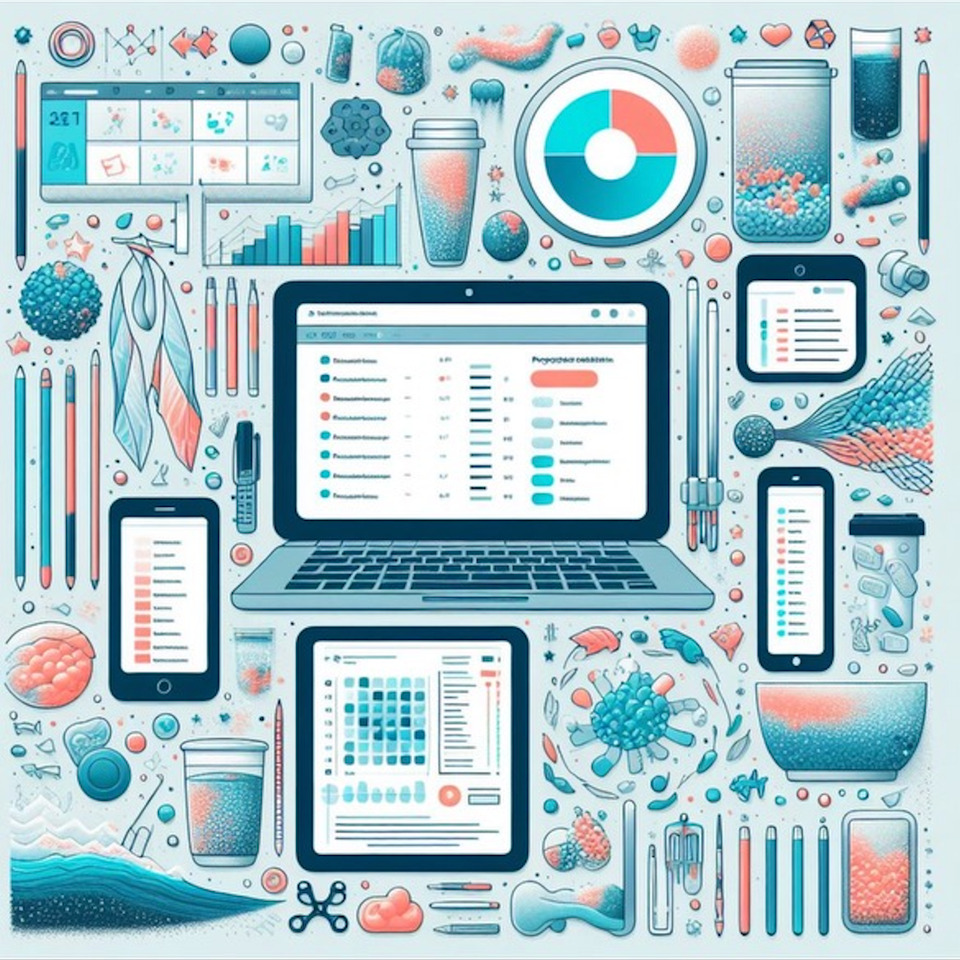
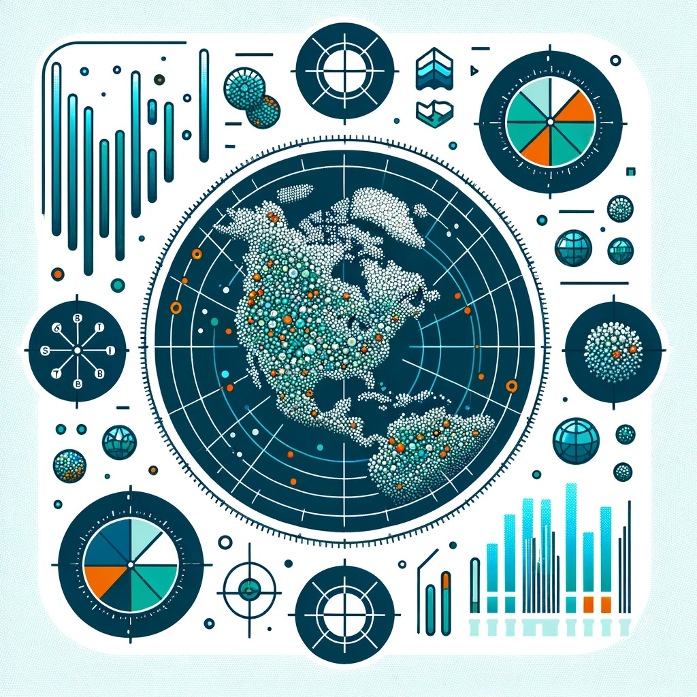

Open Specy conducts Raman and FTIR spectral processing and identification.
Microplastic Data Portal helps users validate and share data with others.

Trash Taxonomy helps to standardize and harmonize trash terminology.
Microplastic Image Explorer allows you to rapidly interact with images of microplastics.

MaTCH allows you to harmonize microplastics and trash data to improve comparability between studies.

Microplastic Analysis allows you to analyze microplastic data to see trends.